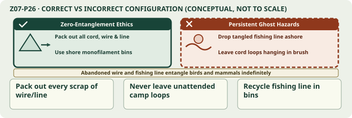

Z07-P26 · Traps and snares · New manuscript
Preventing Ghost-Entanglement from Wire, Cordage and Line
Eliminate persistent wildlife-entanglement hazards caused by discarded snare wire, fishing line, netting, and camp cordage.
When it applies · All camping, fishing, trail maintenance, and outdoor stewardship.
Equipment · Dedicated trash pouch, small snips for safe cleanup of clearly discarded litter only.

Actions
- Pack out 100% of camp cordage, guy lines, wire ties, monofilament fishing line, and food-packaging loops so zero entanglement hazards remain in wildlife habitat.[L13, H07]
- Never leave low-hanging guy lines, mesh netting, or loose loops unattended in woods where deer antlers, owls, bats, and small mammals become fatally snared.[L13]
- Leave clearly active or staked metal traps untouched for DNR reporting, while packing out loose discarded monofilament and litter safely into dedicated recycling or trash bins.[L09, L13, H07]
Failure recognition · Leaving tangled fishing line along a lakeshore or forgotten cordage loops in brush kills loons, eagles, turtles, and mammals silently for years.[L13, H07]
Verify · Camp and shoreline checks confirm zero left-behind cordage, wire, monofilament, or plastic rings.[L13, H07]
Stop or change course · Stop pulling on buried or staked wire if it may be attached to active hardware; report suspicious staked wire to DNR instead.[L09, L13]
Evidence and editorial notes
- H07 · Minnesota DNR · Aquatic Invasive Species Laws and Clean-Drain-Dry Rules (Current web edition)
- Section: Clean, Drain, Dry aquatic invasive species law · Conditions: Moving watercraft, angling gear, waders, or bait between waterbodies
Support: Minnesota law requires cleaning aquatic plants/zebra mussels from gear, draining all water with plugs removed, and disposing of unwanted bait in trash.
Limitations: Never transport live fish or lake water away from infested waters except under explicit statutory permit. · Conflicting evidence: None noted.
Editorial note: Mandatory Z06 conservation/AIS compliance. · Specialist reviewer: Aquatic invasive species specialist
Primary source · checked 2026-11-25 - L09 · Minnesota DNR · Turn In Poachers (TIP) and Conservation Officer Reporting (Current web edition)
- Section: Reporting illegal, unmarked, or abandoned traps and snares · Conditions: Encountering suspected unlawful, out-of-season, or unsafe sets
Support: Do not touch, spring, or steal equipment; photograph from a safe distance with location coordinates and report to MN DNR TIP or local law enforcement.
Limitations: Tampering with lawful traps can be illegal and risks severe hand injury from stored spring energy. · Conflicting evidence: None noted.
Editorial note: Protects bystanders from injury and legal liability. · Specialist reviewer: Conservation enforcement reviewer
Primary source · checked 2026-11-25 - L13 · Minnesota DNR · Scientific and Natural Areas Visitor Rules and Prohibitions (Current web edition)
- Section: Zero-disturbance scientific preserve ethics · Conditions: Sensitive habitats, wetlands, and rare-species corridors
Support: Natural-area conservation prohibits altering vegetation, digging pits, or leaving wire/cordage debris that entangles wildlife indefinitely.
Limitations: Abandoned wire or monofilament creates persistent ghost-entanglement hazards. · Conflicting evidence: None noted.
Editorial note: Addresses ghost-gear and environmental restriction. · Specialist reviewer: Conservation ecologist
Primary source · checked 2026-11-25
Current assessment · A04-L13 (2026-11-25) · Reopened: earlier closure narrowed (A04): Site rules support protection and restrictions. They do not establish a universal rule across land classes or an indefinite entanglement duration. Limits: Specialist review PENDING (Conservation ecologist); publication HOLD. All release decisions pending.
Source lineage · New manuscript (Z07 P18 conservation) · Classification · New manuscript.